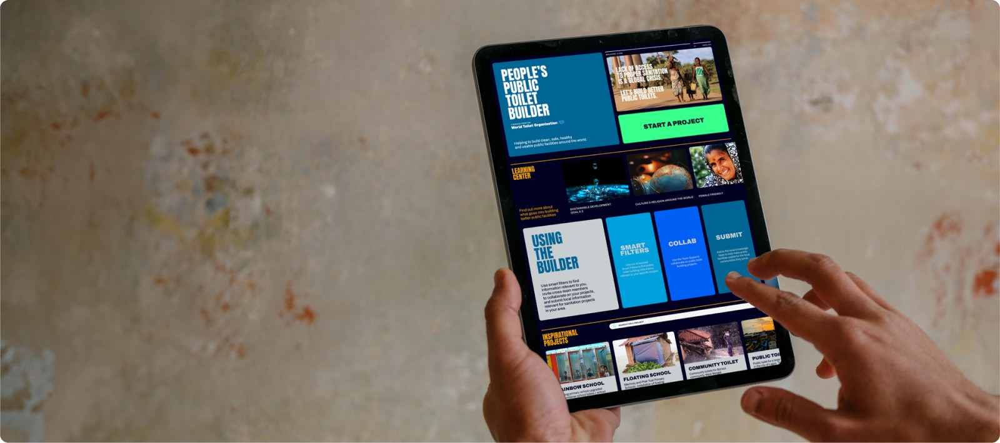
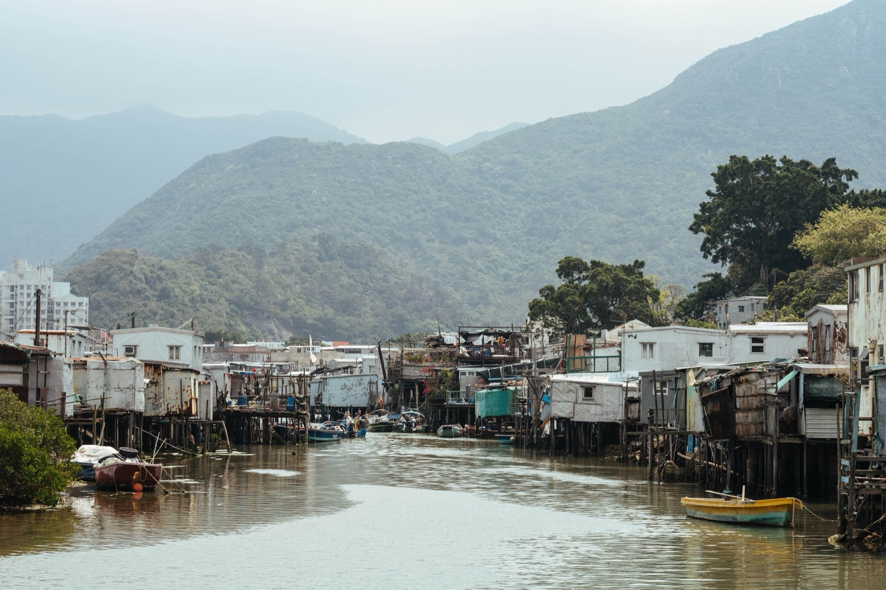
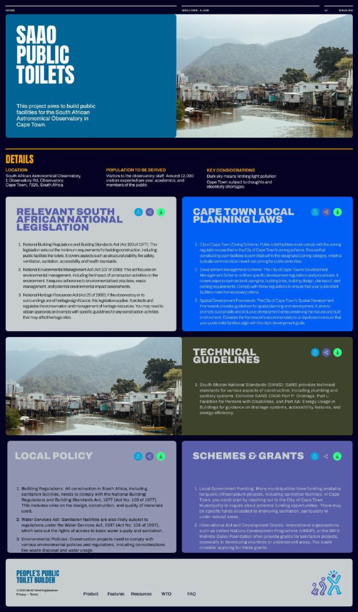
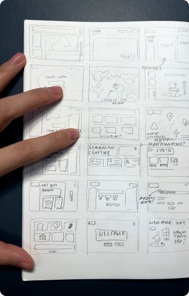
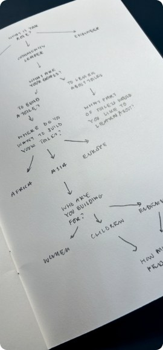
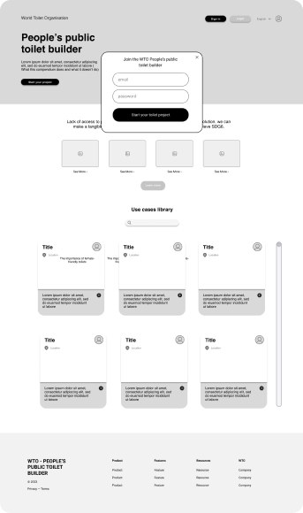
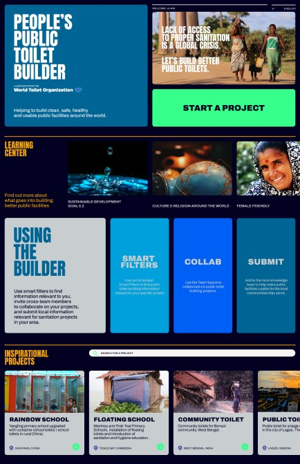
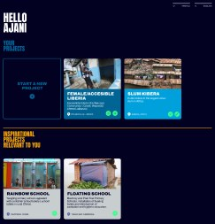
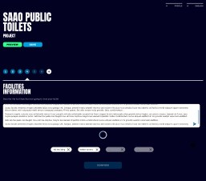
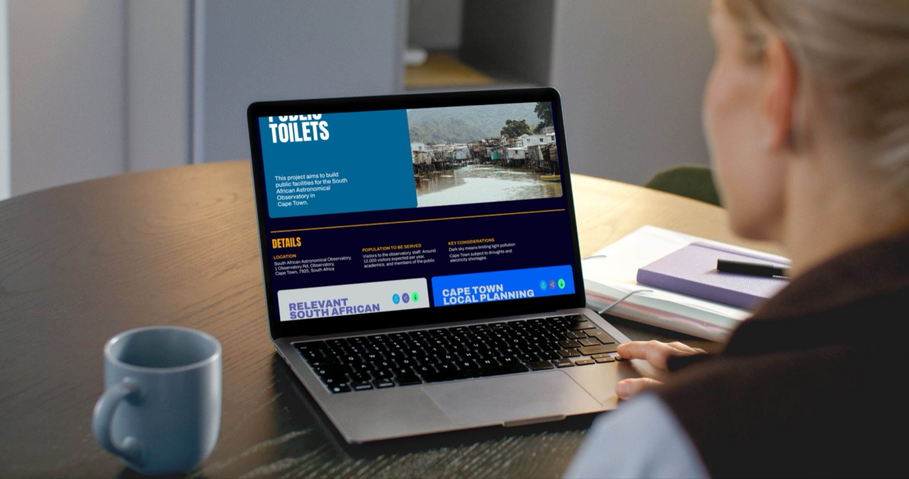

The world's first standardised compendium platform for toilet design — helping professionals plan safe, appropriate public sanitation anywhere in the world.

The People's Public Toilet Builder is a user-centric digital platform aiming to promote good public sanitation systems. Machine learning and crowd-sourced information help professionals like architects make informed decisions when planning toilet projects.
The core problem isn't just infrastructure — it's the information and guidance available to build safe, maintainable facilities. What exists today is inaccessible to key actors (dense, jargon-heavy resources exclude community leaders), fragmented and skewed toward economically advanced nations, and siloed behind institutional walls.

I interviewed stakeholders across the value chain in Asia, North America, and Africa — including a professor of architecture in Illinois, a sanitation official from Kaduna State, Nigeria, and a sanitation development lead in Bangalore, India. Alongside this, I analysed existing systems and successful precedents (SDI's global slum-dweller network, the Compendium of Sanitation Systems and Technologies, the UNHCR WASH manual) and mapped user journeys to incorporate the feedback into our vision.

The flow was designed so user-centred decisions were baked into the building process itself. Reports and questions were tailored to the user's role — an architect might receive design guidelines, while a project officer would see relevant legislation.




Users start here, heading to their project hub or browsing case studies and information banks.

Projects are stored and created here, alongside relevant case studies and ongoing public projects.

Users break a project into simple sections, adding what they know and selecting what they need to consider.
On completion, the builder generates a final report filled with regional information — local resources, cultural practice, and relevant legislation.

The project was taken forward into an implementation stage with support from the Gates Foundation, SuSanA, and GIZ collaborators, though it has since been paused. Had it continued, it would have become the world's first comprehensive toilet compendium — of real value to the hygiene and safety of millions of people worldwide.